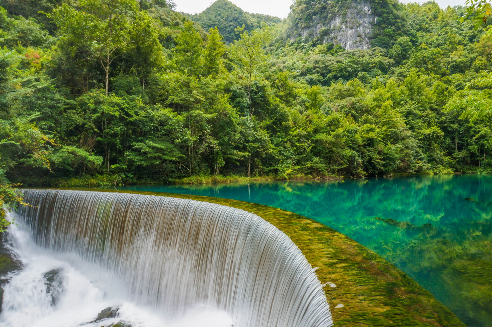
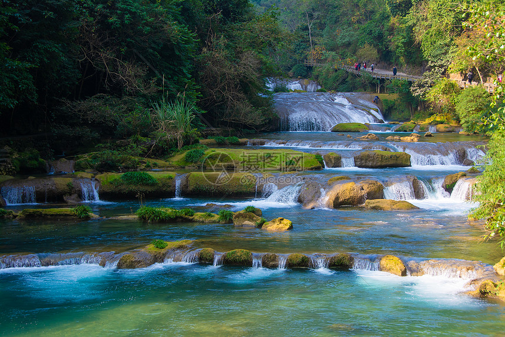
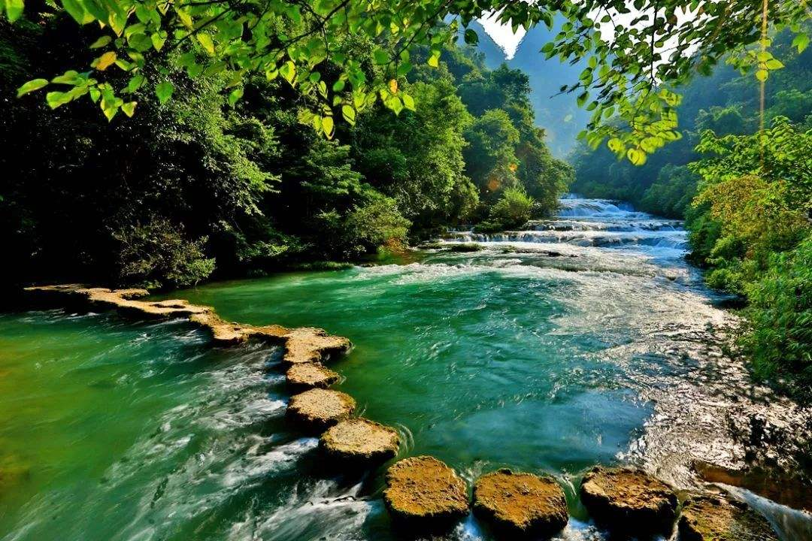
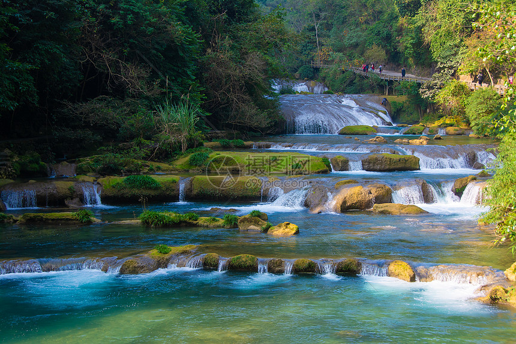
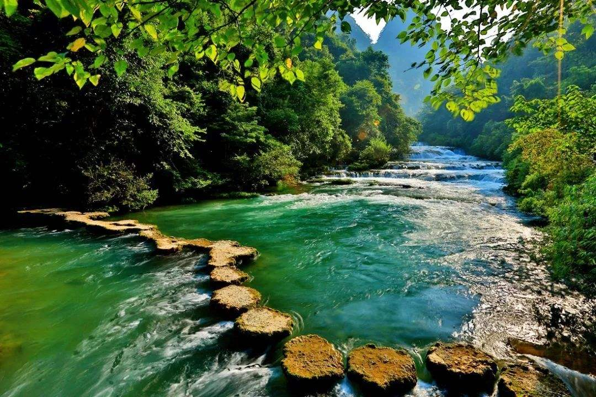
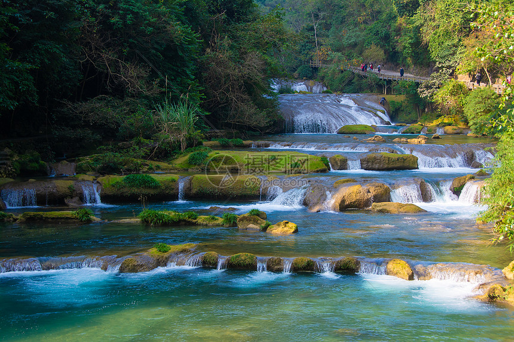
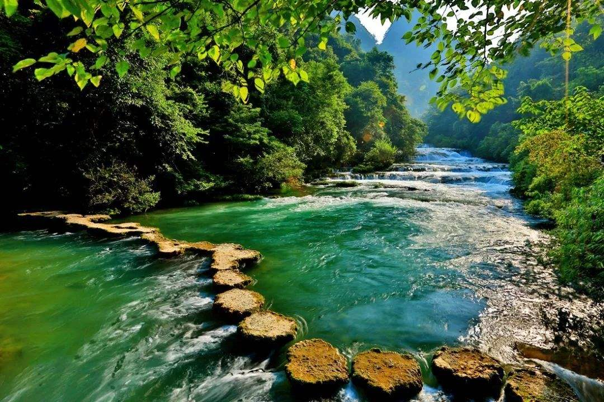

关于荔波小七孔
荔波小七孔，地球腰带上的“绿宝石”。这里有清澈的溪流、层叠的瀑布、茂密的森林和独特的喀斯特地貌。必看：小七孔古桥、卧龙潭、鸳鸯湖。
Libo Xiaoqikong, the "Emerald on Earth's Belt." Features clear streams, cascading waterfalls, lush forests, and unique karst landscapes. Must-sees: Xiaoqikong Ancient Bridge, Wolongtan (卧龙潭), Yuanyang Lake (鸳鸯湖).
Libo Xiaoqikong, l'« Émeraude sur la Ceinture de la Terre ». Offre des ruisseaux clairs, des cascades, des forêts luxuriantes et des paysages karstiques uniques. À voir absolument : Ancien pont de Xiaoqikong, Wolongtan (卧龙潭), Lac Yuanyang (鸳鸯湖).


 





主要特色
- 小七孔古桥：历史悠久的石桥，景区标志性建筑。
- 水上森林：树木生长在水中，景色奇特。
- 卧龙潭：深邃碧绿的潭水，宁静优美。
- 鸳鸯湖：可以划船，湖水清澈。
游玩小贴士
建议游玩时间3-4小时。景区较大，可乘坐观光车游览各个景点。夏季注意防晒和补水。